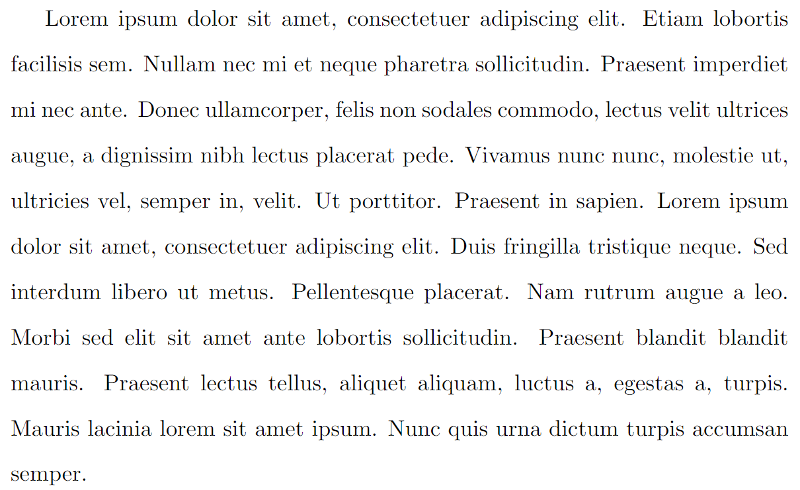
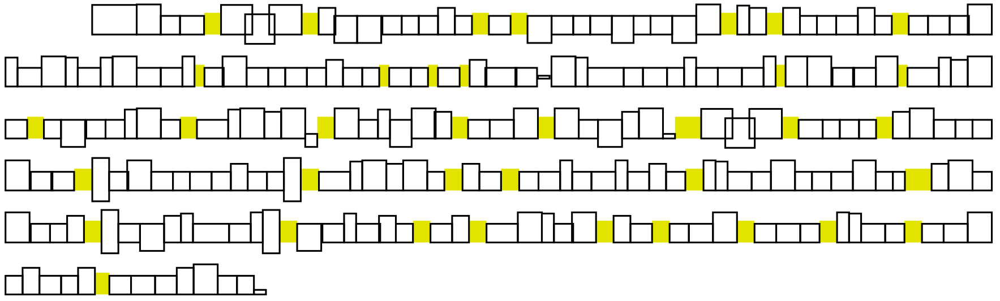
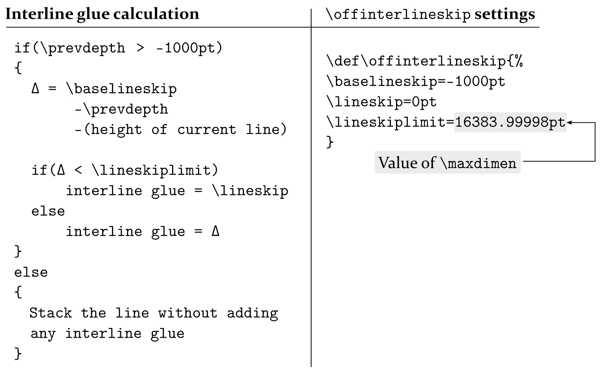

How to change paragraph spacing in LaTeX
Introduction
This article explores two methods of making changes to various aspects of paragraph spacing:
- the best practice, and recommended, method of using LaTeX packages such as
setspaceandparskipwhich provide options and user-level commands to change the spacing of your LaTeX documents;
- use of low-level TeX/LaTeX parameter commands to modify paragraph spacing. Direct use of parameter commands can bypass checks or controls provided by carefully crafted LaTeX packages, potentially resulting in unexpected consequences/side-effects elsewhere in your LaTeX document, so use them with care...
Jump to sections of interest
Readers looking for quick solutions:
- go to the section Using LaTeX packages: setspace and parskip
Readers interested in low-level commands:
- go to the sections TeX/LaTeX parameter commands and The fundamentals: parameter commands and examples
Readers interested in the fine details of line space calculations and paragraph structure:
- go the section Paragraph structure and line space calculations
Using LaTeX packages: setspace and parskip
The parskip package
The parskip package helps you safely change the space inserted between paragraphs in your document. It is designed to ensure that document structures such as table of contents, list environments and display headings are not adversely affected by a non-zero value of the \parskip command, which is used to set the amount of space TeX/LaTeX inserts between paragraphs.
The parskip package doesn’t provide any user-level commands; instead, it uses package options to configure its actions. The parskip documentation is brief, just three pages, but here is a short summary of the package options:
skip: specify\parskip, the vertical space between paragraphs;tocskip: specify a non-zero\parskipvalue for use in\tableofcontentsand similar lists;indent: set the value of\parindent, the paragraph indentation;parfill: adjusts the value of\parfillskip, the glue added at the end of the last line in a paragraph.
By default, the parskip package sets \parindent to 0pt and provides a non-zero \parskip value of .5\baselineskip plus 2pt.
parskip package examples
The following examples demonstrate some uses of the parskip package. Select the “Open in Overleaf” links to open and compile the examples using Overleaf.
Minimal parskip package example
The following minimal example loads the parskip package and typesets two paragraphs created using the blindtext package. The example also typesets the default values of \baselineskip, \parskip and \parindent. The amount of space between the two paragraphs is determined by the value of \parskip:
\documentclass{article}
% Choose a conveniently small page size
\usepackage[paperheight=16cm,paperwidth=14cm,textwidth=12cm]{geometry}
% Load blindtext package for dummy text
\usepackage{blindtext}
% Load the parskip package without options
\usepackage{parskip}
\begin{document}
\blindtext[1]\par %Use \par to force a new paragraph
\blindtext[1]
The value of \verb|\parindent| is \texttt{\the\parindent}. Here are the other values:
\begin{itemize}
\item The value of \verb|\baselineskip| is \texttt{\the\baselineskip}
\item The value of \verb|\parskip| is \texttt{\the\parskip}
\end{itemize}
\end{document}
This example produces the following output:
Note that \parskip glue typically contains a stretchable glue component because that helps LaTeX fit content onto the page and produce the best (optimal) page breaks.
Using parskip package options
The following example loads and configures the parskip package using the skip and indent options. It also typesets two paragraphs, via the blindtext package, and typesets the values of \baselineskip, \parskip and \parindent.
\documentclass{article}
% Choose a conveniently small page size
\usepackage[paperheight=18cm,paperwidth=14cm,textwidth=12cm]{geometry}
% Load blindtext package for dummy text
\usepackage{blindtext}
% Load the parskip package with skip and indent options
\usepackage[skip=10pt plus1pt, indent=40pt]{parskip}
\begin{document}
\blindtext[1]\par % Use \par to force a new paragraph
\blindtext[1]
The value of \verb|\parindent| was set via the \texttt{indent} option, so it is now \texttt{\the\parindent}. The other values are:
\begin{itemize}
\item \verb|\baselineskip| is \texttt{\the\baselineskip}
\item \verb|\parskip| was set via the \texttt{skip} option, so its value is \texttt{\the\parskip}
\end{itemize}
\end{document}
This example produces the following output:
The setspace package
The setspace package provides commands and environments to change the spacing of your document’s lines of text. Here is a brief summary of the main commands and environments provided by setspace:
- the commands
\singlespacing,\onehalfspacingand\doublespacingcan be used in the document preamble, or within the document body to change spacing in part, or all, of your document; - the
\setstretch{baselinestretch amount}command sets a custom spacing (via changes to\baselinestretch)—it can also be used in the document preamble; - the environments
singlespace,singlespace*onehalfspaceanddoublespaceallow line spacing to be changed for selected parts of the document’s text; - the
\SetSinglespace{value}command usesvalueto adjust single-line spacing to accommodate line spacing of text typeset with fonts whose character shapes (“glyphs”) are relatively small, or large, for the given point size. See the section Brief notes on fonts and point size for an illustration demonstrating the variation of font glyph size for a given point size; - the
spacingenvironment provides custom spacing and requires one argument: the\baselinestretchvalue to use; for example:
\begin{spacing}{2.5}
...
...
\end{spacing}
setspace package examples
The following examples demonstrate some uses of the setspace package: click the “Open in Overleaf” links to open and compile the examples using Overleaf.
Using \doublespacing in the document preamble
\documentclass{article}
% Choose a conveniently small page size
\usepackage[paperheight=18cm,paperwidth=14cm,textwidth=12cm]{geometry}
% Load blindtext package for dummy text
\usepackage{blindtext}
% Load the setspace package
\usepackage{setspace}
% Using \doublespacing in the preamble
% changes text to double line spacing
\doublespacing
\begin{document}
\blindtext[1]
\end{document}
setspace example in Overleaf.
This example produces the following output:

Using the spacing environment
Because the following code typesets 3 pages it is preferable to view the output on Overleaf by selecting the “Open in Overleaf” link provided below.
\documentclass{article}
% Choose a conveniently small page size
\usepackage[paperheight=18cm,paperwidth=14cm,textwidth=12cm]{geometry}
% Load blindtext package for dummy text
\usepackage{blindtext}
% Load the setspace package
\usepackage{setspace}
% Using \doublespacing in the preamble
% changes text to double line spacing
\doublespacing
\begin{document}
\blindtext[1]
Now, apply a larger (custom) spacing by applying a \verb|\baselinestretch| value of 3:
\begin{verbatim}
\begin{spacing}{3}
\blindtext[1]
\end{spacing}
\end{verbatim}
\begin{spacing}{2.5}
\blindtext[1]
\end{spacing}
Now, revert to \verb|\singlespacing|\singlespacing\blindtext[1]
\end{document}
setspace example in Overleaf.
Using the singlespace* environment
As noted in the article Quick note on line spacing, the setspace package provides starred (singlespace*) and non-starred versions of the singlespace environment. Comments in the setspace package code note that the singlespace* environment is designed to “... give improved vertical spacing around itemize and quote environments”.
The following example uses itemized lists contained in two minipage environments, placed side-by-side, to demonstrate the different spacing produced by the singlespace and singlespace* environments.
\doublespacing
\blindtext[1]
\begin{minipage}{.4\textwidth}
\begin{singlespace}
Here is a bulleted list\par (\texttt{singlespace} environment).
\begin{itemize}
\item One
\item Two
\item Three
\end{itemize}
\end{singlespace}%
The list has ended.
\end{minipage}\kern10pt%
\begin{minipage}{.4\textwidth}
\begin{singlespace*}
Here is a bulleted list\par (\texttt{singlespace*} environment).
\begin{itemize}
\item One
\item Two
\item Three
\end{itemize}
\end{singlespace*}
The list has ended.
\end{minipage}
setspace example in Overleaf
This example produces the following output:
Using the \setstretch command
\setstretch{value} sets the value of \baselinestretch to value and triggers an immediate change in \baselineslip caused by \baselinestretch. The following example uses \setstretch{1.618}—the strange value of 1.618 is explained later in the article...
% The strange figure of 1.618 is explained later in the article.
\setstretch{1.618}
We write \verb|\setstretch{1.618}| to cause an immediate change to the line spacing. If we wrote \verb|\renewcommand{\baselinestretch}{1.618}| the line spacing would not be modified until a font-changing command, such as \verb|\selectfont|, is used.
\blindtext[1]
setspace example in Overleaf.
This example produces the following output:
Using the \SetSinglespace command
The following project is compiled via LuaLaTeX and uses the fontspec package to access the TeX Gyre Pagella fonts. It compares two paragraphs of text typeset in TeX Gyre Pagella: the first paragraph uses the default single-line spacing and the second has a larger single-line spacing due to applying \SetSinglespace{1.1}. Some people may prefer the second, slightly “opened up”, paragraph, finding it improves reading comfort, but that is, of course, a matter of personal preference.
\section*{Computer Modern default single spacing}
Some regular text. \blindtext[1]
\setmainfont{TeX Gyre Pagella}
\section*{TeX Gyre Pagella default single line spacing}
Here is some regular text. \blindtext[1]
\section*{TeX Gyre Pagella adjusted single line spacing}
Note: we need to issue \verb|\singlespacing| after writing
\verb|\SetSinglespace{1.1}|\SetSinglespace{1.1}\singlespacing
\begin{singlespace*}
Here is some regular text. \blindtext[1]
\end{singlespace*}
setspace example in Overleaf.
This example produces the following output:
In the next section we review the commands \baselinestretch and \linespread.
Understanding \baselinestretch and \linespread
Part of LaTeX’s design for handling line spacing and font changes (font size, font family, font encoding etc) makes use of two commands that you might encounter:
\baselinestretch: this command stores a scaling factor used to multiply (scale) the current value of\baselineskip. That scaling is typically applied the next time a font-selection command is used—such as\selectfont. To change the value stored by\baselinestretchyou should write\renewcommand{\baselinestretch}{scale}- Note: If you write
\renewcommand{\baselinestretch}{scale}in the body of the document, the new value of\baselinestretchwill not take immediate effect: the newscalefactor is stored for future use. To immediately use/apply the newscalevalue, write\selectfontas demonstrated in the code fragment below.
- Note: If you write
\linespread{scale}: can be used to change\baselineskipwithout affecting the current font size. This command sets\baselinestretchtoscalewhich subsequently changes\baselineskiptoscale × \baselineskip. However, that scaling also does not take place immediately unless the\linespreadcommand is used in the document preamble. If\linespreadused in the document body, it takes effect after the next font sizing/selection command is used.
Based on the above, either:
\renewcommand{\baselinestretch}{scale}\selectfontor,\linespread{scale}\selectfont
could be used to change line spacing, and both will work across changes to the font size, as demonstrated in the example below. So, which one should you use? Refer to this short discussion on tex.stackexchange.
Demonstrating \linespread
The following example uses \linespread{2.5} in the document preamble, which changes line spacing without requiring additional font-selection commands:
\documentclass{article}
% Choose a conveniently small page size
\usepackage[paperheight=18cm,paperwidth=14cm,textwidth=12cm]{geometry}
% Load blindtext package for dummy text
\usepackage{blindtext}
% Using \linespread in the preamble changes
% line spacing without requiring additional
% font-selection commands, such as \selectfont
\linespread{2.5}
\begin{document}
\blindtext[1] % The lines are affected by \linespread{2.5}
\end{document}
This example produces the following output:
Using \linespread{2.5} in the document body (after \begin{document}) would require font-selection commands to trigger the change in line spacing. Open the following code on Overleaf and compare the output with the previous example:
Because the following \verb|\linespread| command is used in the document body, a font-selection command is required to change the line spacing. Un-comment \verb|\selectfont| to see the difference:
\linespread{2.5}%\selectfont
% Without \selectfont the following paragraph lines are
% unaffected affected by \linespread{2.5}:
\blindtext[1]
This example produces the following output:
Demonstrating \baselinestretch
The following example demonstrates \baselinestretch and \selectfont to show the corresponding effect(s) on \baselineskip:
The default value of \verb|\baselineskip|=\the\baselineskip. Now update \verb|\baselinestretch|\renewcommand\baselinestretch{2.5}. However, although we have executed
\vspace{5pt}
\verb|\renewcommand\baselinestretch{2.5}|
\vspace{5pt}
\noindent it \textit{has not} (yet) had any effect: the new value of \verb|\baselinestretch| is stored, but not actioned. We can issue a \verb|\selectfont| command to make the change take effect; but, for now, the value of \verb|\baselineskip| is still \the\baselineskip{} (unchanged).
If we now execute \verb|\selectfont| the change to \verb|\baselinestretch|, setting it to 2.5, will now take effect---\selectfont even though we are in the middle of a paragraph. Now, the value of \verb|\baselineskip| is \the\baselineskip{} (= \(2.5 \times 12=30\mathrm{pt}\)).
What happens if we change the font size to 14pt and \verb|\baselineskip| to 16pt using the commands \verb|\fontsize{14}{16}\selectfont|?
\fontsize{14}{16}\selectfont Now, \verb|\baselineskip| is \textit{not} 16pt but \the\baselineskip{} because the value of \verb|\baselinestretch| (2.5) has been preserved and applied, giving \verb|\baselineskip| = \(2.5 \times 16=40\mathrm{pt}\).
\section{\texttt{\bfseries\string\linespread}}
The \verb|\linespread| command can be used to modify \verb|\baselineskip| without changing the font size.
This example produces the following output:
How is “line spacing” defined and changed in the setspace package?
The precise definition, and measurement of, “line spacing” is open to interpretation, which can result in various implementations within software systems/applications. Clearly, the setspace package has to assume a working definition of line spacing so that it can provide support for typesetting “single-” and “double-spaced” lines, or any other multiple of line spacing. But which variables are modified by setspace to produce lines with differing levels of white space between them?
Fortunately, discussions on tex.stackexchange and comments in the package code clarify how setspace implements lines spacing: it sets the value of \baselineskip using a multiple of the font’s point size.
Brief notes on fonts and point size
Using fonts at a particular point size means applying a scaling factor to the character shapes (glyphs) in those fonts; once scaled according to the point size, the visible size of the character is a function of the font’s design (typeface). Point size has no universal, hard-and-fast, relationship to the actual display size of character shapes within fonts.
The following image shows lowercase letters “abc” styled using 4 different fonts and all displayed at the same point size. Note how the “size” of these lowercase letters varies according to the font’s design (typeface) even though they are all typeset at the same point size:
Single line space in the setspace package
We can use discussions on tex.stackexchange as a basis for some further explanations.
A basic document using the article class has a default text font size of 10pt with a \baselineskip of 12pt. With the option [11pt] or [12pt] the article class uses a larger text size and correspondingly larger value for \baselineskip as shown in the following table:
| option | font size | \(\texttt{\baselineskip}\) | \(\displaystyle\frac{\texttt{\baselineskip}}{\text{font size}}\) |
|---|---|---|---|
| [10pt] (default) | 10pt | 12pt | 1.2 |
| [11pt] | 10.95pt\({}^{\textbf{*}}\) | 13.6pt | 1.24 |
| [12pt] | 12pt | 14.5 | 1.21 |
\({}^{\textbf{*}}\)The reason for the anomalous value of 10.95pt, and not exactly 11pt, is nicely explained in this reddit post.
As shown in the table, for each combination of text point size, and the corresponding default (i.e., single-line spacing) value of \baselineskip, the ratio
\[\frac{\texttt{\baselineskip}}{\text{font size}}\]
is close to 1.2. That ratio value designates single-line spacing and provides the basis for line-spacing calculations used by the setspace package.
Understanding and calculating values for \baselinestretch
To achieve a particular line-spacing multiple such as 1.5, 2, 3 etc., the \baselinestretch command has to be set to seemingly “strange” values; for example by using the \linespread command. In this section we’ll take a closer look at \baselinestretch to see how those “strange” values arise.
Let’s choose a document with default font size of \(f\) and default \baselineskip of \(\text{dbls}_1\), where the subscript \({}_1\) implies default \baselineskip value for single-line spacing at font size \(f\).
We’ll define single-line spacing as the following ratio which we’ll refer to as \(\alpha_f\):
\[\frac{\text{dbls}_1}{f}=\alpha_f\]
For a given font size \(f\), let’s also define the following line spacing values:
- a 1.5 multiple of line spacing is defined as
\[\frac{\text{dbls}_{1.5}}{f}=1.5\]
- a 2.0 multiple of line spacing is defined as
\[\frac{\text{dbls}_{2.0}}{f}=2.0\]
- a multiple, \(m\), of line spacing is defined as
\[\frac{\text{dbls}_{m}}{f}=m\]
Using our single-line spacing, defined by the ratio \(\alpha_f\), we can write the following “pseudo code” to work out a \baselinestretch value corresponding to any line-space multiple \(m\):
\[ \begin{align*} \texttt{multi spacing } (m) &= \text{a constant } (\lambda) \times \texttt{single spacing}\\ \frac{\text{dbls}_{m}}{f}&=\lambda \times \alpha_f\\ m&=\lambda\alpha_f\\ \lambda&=\frac{m}{\alpha_f}\kern5pt(\text{refer to }\lambda\text{ as }\texttt{\baselinestretch})\\ \implies \texttt{\baselinestretch}&=\frac{m}{\alpha_f} \end{align*} \]
Let’s use 11pt text (actually 10.95pt) and the default \baselineskip value of 13.6pt to calculate \baselinestretch for double line spacing:
\[ \begin{align*} m&=2.0\\ \texttt{\baselinestretch}&=\frac{2.0}{\alpha_f}\\ &=\frac{2.0}{\frac{\text{dbls}_1}{f}}\\ &=\frac{2.0}{\frac{13.6}{11}}\\ &=2.0 \times \frac{11}{13.6}\\ &=1.618\\ \end{align*} \]
The following code fragment is used in the setspace package to achieve \doublespacing when the font size is 11pt. Note how the value of 1.618, as calculated above, is stored in the command \baselinestretch:
\newcommand{\doublespacing}{%
\setstretch {1.667}% default
\ifcase \@ptsize \relax % 10pt
\setstretch {1.667}%
\or % 11pt
\setstretch {1.618}%
\or % 12pt
\setstretch {1.655}%
\fi
}
Using an article document class with the 11pt font option, the following example compares \doublespacing with a spacing environment using our calculated value of 1.618 for \baselinestretch. Not surprisingly, the \baselineskip values are identical (22.00475pt):
\begingroup
\doublespacing
\verb|\baselineskip|=\texttt{\the\baselineskip} (via \verb|\doublespacing)|
\blindtext[1]
\endgroup
\begin{spacing}{1.618}
\verb|\baselineskip|=\texttt{\the\baselineskip} (via \verb|\begin{spacing}{1.618})|
\blindtext[1]
\end{spacing}
This example produces the following output:
Similar calculations of \baselinestretch values apply to other font sizes and line spacing combinations, as listed in the following tables:
Using TeX/LaTeX parameter commands
The following sections explore a number of commands related to paragraph spacing/formatting: some of those commands are built into TeX typesetting engines, others are TeX/LaTeX macros. Commands built into TeX engines are known as primitives, meaning they are fundamental and irreducible because, unlike macros, primitives are not constructed from sequences of other commands.
In particular, we’ll consider a number of primitive parameter commands supported by all TeX engines, including pdfTeX, XeTeX and LuaTeX. Parameter commands, whether paragraph-related or not, are used to get the current value of the corresponding parameter, or set that parameter to a new value. For example, the \parskip command, a primitive, determines the value of a parameter which controls the amount of white space inserted between two typeset paragraphs.
To get (here, to typeset) the current value of \parskip you would write:
\the\parskip
To set the current value of \parskip to 1pt plus2pt (a flexible glue) you could write something like this:
\setlength{\parskip}{1pt plus2pt}
We also discuss some useful TeX/LaTeX macros, higher-level commands written and constructed using a sequence of constituent commands.
Commands used for paragraph spacing
The following commands (primitives and macros) can be used to affect paragraph spacing. Some are explored in more detail which can be accessed by following the link from the command name.
Primitive commands
\parindent: the amount of indentation (white space) added to the first line of a paragraph.\parskip: the amount of flexible white space (“glue”) placed between paragraphs.\rightskip: flexible spacing (glue) inserted to the right of each line in a paragraph.\leftskip: flexible spacing (glue) inserted to the left of each line in a paragraph.\baselineskip: the value of this parameter serves two roles:- it sets the desired distance between the baselines of text in a paragraph;
- it is used to calculate the (variable) amount of space (glue) added between lines in order to achieve the desired baseline-to-baseline distance (see later in the article).
\lineskiplimit: a parameter whose value defines the minimum acceptable distance between two adjacent lines of a paragraph.\lineskip: the amount of space (glue) inserted between two lines in a paragraph if the calculated\baselineskipglue would result in lines being too close together.\parfillskip: very flexible glue added at the end of the last line in a paragraph in order to “fill it” with white space; for a visual example, refer to the illustration in the section Visualizing other types of paragraph glue.
Macro commands
The following TeX/LaTeX macro commands are often used to modify paragraph spacing:
\offinterlineskipand\nointerlineskip: commands which can be used to switch off calculation and insertion of\baselineskipglue;\baselinestretch: a command which stores a numeric factor used to calculate the value of\baselineskipwhen a font is selected. It has a default value of 1;\linespread: this command can be used to change the current value of\baselinestretch.
Flexible spacing (glue)
TeX engines achieve spacing effects, including within or between paragraphs, through the use of a flexible white space called glue which can be stretched or shrunk according to the amount of space required. If you want to learn about TeX’s concept of glue, more details can be found in the following Overleaf articles:
- Exploring underfull or overfull boxes and badness calculations
- How TeX calculates glue settings in an \hbox
- Understanding underfull and overfull box warnings.
The fundamentals: parameter commands and examples
In this section we explain a number of paragraph-related parameter commands and provide examples of their use.
\parindent (TeX primitive)
This parameter command sets the amount of indentation (white space) added to the first line of a paragraph. It can be changed by using LaTeX’s \setlength command; for example, to indent paragraphs by 15pt set \parindent to 15pt by writing:
\setlength{\parindent}{15pt}
Note that:
- you can change
\parindentwithin a group, ensuring its effect is localized to paragraphs in that group; \parindentcan be negative, producing an “outdent” rather than an indent;- by default LaTeX does not indent the first paragraph following a document section heading (
\section{...}etc).
The following example demonstrates the use of \parindent.
\documentclass{article}
% Choose a conveniently small page size
\usepackage[paperheight=16cm,paperwidth=12cm,textwidth=8cm]{geometry}
% Create a command to hold a paragraph of text
\newcommand{\testpar}{\texttt{\string\parindent=\the\parindent\ }When \TeX{} typesets a paragraph it treats each individual character as a 2D ``box'' with a specific width, height and depth.\par}
\begin{document}
% Set \parskip to put 10pt between paragraphs
\setlength{\parskip}{10pt}
% Set the value of \parindent to 0pt
\setlength{\parindent}{0pt}
\testpar
% Set the value of \parindent to 10pt
\setlength{\parindent}{10pt}
\testpar
% Set \parindent in a group
{\setlength{\parindent}{50pt}\testpar}
% Now \parindent is again 10pt
\testpar
% Yes, you can have a negative \parindent
\setlength{\parindent}{-20pt}
\testpar
\end{document}
This example produces the following output:
\parskip (TeX primitive)
The legibility of text can be enhanced by separating paragraphs with an amount of white space that will vary according to some design aesthetic. TeX/LaTeX allow users to control that inter-paragraph spacing via the \parskip parameter command.
- Advice from the
parskippackage: The parskip package advises that directly modifying\parskipcan “result in vertical spaces in unexpected places” (within a LaTeX document). Theparskippackage attempts to fix spacing issues that might arise from changes to the value of\parskip—such as within table of contents and list environments. See also theparskippackage section of this article.
To manually set the current value of \parskip use LaTeX’s \setlength command; for example, to separate paragraphs by 3pt you can write:
\setlength{\parskip}{3pt}
The following example demonstrates the use of \parskip:
\documentclass{article}
% Choose a conveniently small page size
\usepackage[paperheight=16cm,paperwidth=12cm,textwidth=8cm]{geometry}
% Create a command to hold a paragraph of text
\newcommand{\testpar}{\noindent The current value of \texttt{\string\parskip} is \texttt{\the\parskip}. When \TeX{} typesets a paragraph it treats each individual character as a 2D~``box'' with a specific width, height and depth.\par}
\begin{document}
\testpar
% Set \parskip to 5pt
\setlength{\parskip}{5pt}\testpar
% Set parskip to 10pt
\setlength{\parskip}{10pt}\testpar
% Set \parskip to 25pt (but in a group)
{\setlength{\parskip}{25pt}\testpar}
% Group ends, now \parskip is again 10pt
\testpar
% Yes, you can have a negative \parskip
\setlength{\parskip}{-20pt}\testpar
\end{document}
This example produces the following output:
Flexible \parskip
Traditionally, \parskip is not a fixed value, which would result in the same amount of space between all paragraphs. Instead, \parskip is usually defined as a “flexible space” (called glue) which enables TeX to stretch or shrink the space between paragraphs, helping to fit content on the page and find a “good” place for a page break.
To make \parskip flexible you would write it in the form of a glue specification:
\setlength{\parskip}{fixed amount plus amount to stretch minus amount to shrink}
where plus and minus are keywords used by TeX/LaTeX to identify the amount to stretch or amount to shrink contained in a glue specification. The Overleaf article Exploring underfull or overfull boxes and badness calculations contains a more in-depth discussion of glue.
For example, to enable \parskip to vary between 3 + 1 = 4pt and 3 — 1 = 2pt you could write
\setlength{\parskip}{3pt plus1pt minus1pt}
\leftskip and \rightskip (TeX primitives)
TeX engines provide two parameter commands which add space (glue) to the left and right of each line in the typeset paragraph. As their names suggest:
\leftskipinserts space (glue) to the left of each line in a paragraph;\rightskipinserts space (glue) to right left of each line in a paragraph.
The following examples use \leftskip and \rightskip to directly modify paragraph alignment; however... changes to text alignment are usually best achieved via suitable LaTeX environments or packages—for example, see the Overleaf article on text alignment. Although we demonstrate the behaviour of some low-level (primitive) parameter commands provided by TeX engines, it is generally advisable to use appropriate LaTeX packages wherever possible.
Making \leftskip fixed and \rightskip flexible
The following example produces two paragraphs: the first uses LaTeX’s default values for \leftskip and \rightskip and the second paragraph is typeset using the following settings:
\leftskip 10pt
\rightskip 0pt plus 1 fill
Open the following Overleaf project to see the output:
\documentclass{article}
\title{Second leftskip and rightskip example}
% Choose a conveniently small page size
\usepackage[paperheight=16cm,paperwidth=12cm,textwidth=8cm]{geometry}
% Set the value of some paragraph-related parameters
\setlength{\lineskip}{3.5pt}
\setlength{\lineskiplimit}{2pt}
\setlength{\parindent}{20pt}
\setlength{\baselineskip}{12pt}
\begin{document}
\input text.tex % A generated TeX file which defines the macros
% \mytextA and \mytextB, each containing the text for a paragraph.
% Typeset a paragraph with default values of \leftskip and \rightskip
\mytextB
% Set \leftskip and \rightskip to new values
\leftskip 10pt
\rightskip 0pt plus 1fill
\vspace{8pt}
% Now re-typeset the same paragraph
\mytextB
\end{document}
Open this example as an Overleaf LaTeX project
This example generates the following output:
The following graphic is an annotated version of the second paragraph produced by the example above. It is designed to highlight and show the amount of \leftskip and \rightskip glues inserted in the paragraph lines, together with the \parindent space for the first line:
Note that \leftskip glue has a fixed size (10pt) but \rightskip glue has stretched to provide any amount of white space required to fill up the right-hand side of each line. This “flexibility” is due to the specification of \rightskip which contains plus 1 fill—providing an “infinitely stretchable” form of glue.
Making \rightskip fixed and \leftskip flexible
The following example produces two paragraphs: the first uses LaTeX’s default values for \leftskip and \rightskip and the second paragraph is typeset using the following settings:
\leftskip 0pt plus 1 fill
\rightskip 10pt
Open the following Overleaf project to see the output:
\documentclass{article}
\title{leftskip and rightskip examples}
% Choose a conveniently small page size
\usepackage[paperheight=16cm,paperwidth=12cm,textwidth=8cm]{geometry}
% Set the value of some paragraph-related parameters
\setlength{\lineskip}{3.5pt}
\setlength{\lineskiplimit}{2pt}
\setlength{\parindent}{20pt}
\setlength{\baselineskip}{12pt}
\begin{document}
\input text.tex % A generated TeX file which defines the macros
% \mytextA and \mytextB, each containing the text for a paragraph.
% Typeset a paragraph with default values of \leftskip and \rightskip
\mytextB
% Set \leftskip and \rightskip to new values
\rightskip 10pt
\leftskip 0pt plus 1fill
\vspace{8pt}
% Now re-typeset the same paragraph
\mytextB
\end{document}
Open this example as an Overleaf LaTeX project
This example generates the following output:
The following graphic is an annotated version of the second paragraph produced by example above. It is designed to highlight and show the amount of \leftskip and \rightskip glues inserted in the paragraph lines, together with the \parindent space for the first line:
Note that \rightskip glue has a fixed size (10pt) but \leftskip glue has stretched to provide any amount of white space required to fill up the left-hand side of each line. This “flexibility” is due to the specification of \leftskip which contains plus 1 fill—providing an “infinitely stretchable” form of glue.
Setting \leftskip and \rightskip to flexible values
The following example produces two paragraphs: the first uses LaTeX’s default values for \leftskip and \rightskip and the second uses the following, flexible, glue settings:
\leftskip 0pt plus 1fill
\rightskip 0pt plus 1fill
These settings result in paragraph lines being centered:
\documentclass{article}
\title{leftskip and rightskip examples}
% Choose a conveniently small page size
\usepackage[paperheight==16cm,paperwidth==12cm,textwidth=8cm]{geometry}
% Set the value of some paragraph-related parameters
\setlength{\lineskip}{3.5pt}
\setlength{\lineskiplimit}{2pt}
\setlength{\parindent}{20pt}
\setlength{\baselineskip}{12pt}
\begin{document}
\input text.tex % A generated TeX file which defines the macros
% \mytextA and \mytextB which define text for two paragraphs
% Typeset a paragraph with default values of \leftskip and \rightskip
\mytextB
% Set \leftskip and \rightskip to "extremely flexible" glue settings
\leftskip 0pt plus 1fill
\rightskip 0pt plus 1fill
\vspace{20pt}
% Now re-typeset the same paragraph
\mytextB
\end{document}
Open this example as an Overleaf LaTeX project
This example generates the following output:
The following graphic is an annotated version of the second paragraph produced by example above. It is designed to highlight and show the amount of \leftskip and \rightskip glues inserted in the paragraph lines, together with the \parindent space for the first line:
Note that both \leftskip and \rightskip are specified as 0pt plus 1fill making them equally “infinitely flexible”; consequently, they stretch by the same amount which results in typeset lines being centred.
Setting \leftskip and \rightskip in a group
The following example shows how to make temporary changes to \leftskip and \rightskip by enclosing them inside a group. In our example the group is created by \begingroup... \endgroup, as shown in the following code fragment:
\begingroup
\leftskip 0pt plus 1fill
\rightskip 0pt plus 1fill
\mytextB
\endgroup
The first paragraph is typeset using “extremely flexible” glue for \leftskip and \rightskip:
\leftskip 0pt plus 1fill
\rightskip 0pt plus 1fill
but the second paragraph uses LaTeX’s default values:
\documentclass{article}
\title{Another leftskip and rightskip example}
% Choose a conveniently small page size
\usepackage[paperheight=16cm,paperwidth=12cm,textwidth=8cm]{geometry}
% Set the value of some paragraph-related parameters
\setlength{\lineskip}{3.5pt}
\setlength{\lineskiplimit}{2pt}
\setlength{\parindent}{20pt}
\setlength{\baselineskip}{12pt}
\begin{document}
\input text.tex % A generated TeX file which defines the macros
% \mytextA and \mytextB which define text for two paragraphs
% Here we change \leftskip and \rightskip to "extremely flexible" glue settings
% within a group created by \begingroup ... \endgroup
\begingroup
\leftskip 0pt plus 1fill
\rightskip 0pt plus 1fill
\mytextB
\endgroup
% Now re-typeset the same paragraph after the group has closed
% causing \leftskip and \rightskip revert to their previous values
\vspace{20pt}
\mytextB
\end{document}
Open this example as an Overleaf LaTeX project
This example generates the following output:
Note: The settings for (effects of) \leftskip and \rightskip are restricted to the paragraph within the group created by \begingroup... \endgroup. After the group has been closed, the next paragraph is typeset using LaTeX’s default values for \leftskip and \rightskip.
\baselineskip (TeX primitive)
It is generally accepted typesetting practice that lines of text within paragraphs should be equally spaced, except where certain lines contain large elements, such as mathematics or an image, which make it impossible to preserve constant interline spacing for such lines.
TeX/LaTeX provide commands and mechanisms which enable users to exercise some degree of control over interline spacing. One such command is \baselineskip which gets, or sets, the value of a parameter that determines the preferred interline spacing (baseline-to-baseline distance) in a typeset paragraph.
To typeset the current value of \baselineskip you can write
\the\baselineskip
To set \baselineskip to some value (a LaTeX length such as pt) you can write
\setlength{\baselineskip}{value}
For example, to set \baselineskip to 12pt you can write
\setlength{\baselineskip}{12pt}
We can demonstrate the role of \baselineskip by using the following (typical) paragraph:
and adding annotations which show the baseline-to-baseline distance controlled by \baselineskip:
The diagram also shows the interline “glue”: a calculated amount of white space added between lines—we’ll further discuss this later in the article.
\baselineskip and other parameters
\baselineskip is one of four core parameters which control the amount of space inserted between lines of a paragraph; the others are:
\lineskip\lineskiplimit\prevdepth
Later in the article we’ll explore how these four parameters are used to calculate interline glue values.
\baselineskip example (fixed space)
The following example opens in Overleaf to create a project containing a file called text.tex which defines the commands \mytextA and \mytextB—both commands typeset a paragraph. For convenience, the Overleaf project uses a small page size because that assists with preparing graphics and images for this help page.
\documentclass{article}
\title{Demonstrating baselineskip}
% Choose a conveniently small page size
\usepackage[paperheight=16cm,paperwidth=12cm,textwidth=8cm]{geometry}
% Set the value of some paragraph-related parameters (we will discuss these)
\setlength{\lineskip}{3.5pt}
\setlength{\lineskiplimit}{2pt}
\setlength{\parindent}{20pt}
% Set the value of \baselineskip---change the value to see the effect
\setlength{\baselineskip}{12pt}
\begin{document}
\input text.tex % A generated TeX file which defines the macros
% \mytextA and \mytextB, each of which typeset a paragraphs
% Firstly, typeset two paragraphs with the default \baselineskip
\mytextA\mytextB
% Now change \baselineskip to a larger value and typeset
% another paragraph
\setlength{\baselineskip}{24pt}
\mytextA
\end{document}
Open this example as an Overleaf LaTeX project
This example generates the following output:
The paragraph on page 2 has widely spaced lines because \baselineskip was set to 24pt.
\baselineskip example (flexible space)
The following example specifies a \baselineskip value which has an extremely flexible (so-called “infinite”) stretch component:
\baselineskip=12pt plus1fil
Because of this flexibility, white space between paragraph lines can stretch by any amount required to fill the page. Such flexibility would result in paragraphs having very different amounts of space between their constituent lines of text, which might not be aesthetically pleasing or easy to read.
\documentclass{article}
\usepackage{blindtext}
\title{Flexible \texttt{\string\baselineskip} demo}
\author{Overleaf}
\date{January 2022}
\begin{document}
\maketitle
We’ll provide \verb|\baselineskip| with a very flexible ``stretch'' component by assigning the value \texttt{12pt plus1fil}: \verb|\baselineskip=12pt plus1fil|.\baselineskip=12pt plus1fil
\section{Introduction}
Add a paragraph that will now stretch to fill the page. \blindtext
\end{document}
This example produces the following output:
A few notes on glue
Some of the following notes are taken from the Overleaf article exploring underfull or overfull boxes and badness calculations, reproduced here for convenience.
The white space that TeX inserts between lines of a paragraph, \baselineskip, is a form of flexible spacing called glue. A glue value can be specified three components:
- a fixed amount;
- an amount it can stretch;
- an amount it can shrink,
Consequently, a \baselineskip value can be specified like this:
\baselineskip=fixed amount plus amount to stretch minus amount to shrink
where
- plus and minus are keywords that TeX engines understand;
- fixed amount is referred to as the normal component of the glue (also called the natural width of the glue);
- amount to stretch is referred to as the stretch component of the glue;
- amount to shrink is referred to as the shrink component of the glue.
The fixed amount is required for all glue values but amount to stretch and amount to shrink are both optional—if either, or both, are missing they are set to a value of 0.
Usually, \baselineskip glue is specified with a fixed amount only, the stretch and shrink components are zero, otherwise paragraph lines would have irregular (variable) spacing, which might not be aesthetically pleasing.
\offinterlineskip and \nointerlineskip (macros)
These macros are often used to prevent insertion of interline glue between lines of a paragraph. Readers interested in more detail can jump ahead to the relevant article sections which explain how these macros work.
\offinterlineskip: See the article section Zero-sized interline glue: \offinterlineskip.\nointerlineskip: See the article section Preventing interline glue: \prevdepth and \nointerlineskip.
Paragraph structure and line space calculations
Using the capabilities of LuaTeX it is possible to post-process a typeset paragraph to visualize boundaries of constituent characters (glyphs), lines and glues from which it is constructed. We’ll start with a short sequence of graphics to help visualize the “boxes and glue” model that TeX engines use to typeset text contained in a paragraph.
Paragraph structure
When TeX typesets a paragraph it treats individual characters as miniature boxes, each with its own width, height and depth and those character-box widths are used to calculate the optimum locations for linebreaks. In addition, space characters contained within the text, and used to separate individual words, are converted to a form of flexible space (glue) which provides the spacing needed to achieve each linebreak.
The following sequence of 7 graphics show the core components of a typeset paragraph: various types of boxes and glue. The first graphic shows a typeset paragraph together with an annotated version which highlights various elements within the paragraph. However, the annotated paragraph contains a lot of information so the subsequent graphics isolate various components to (hopefully) make them easier to understand.
- The next graphic depicts paragraph lines as gray boxes separated by glue that is represented by horizontal green strips. That glue is calculated to ensure the baseline-to-baseline distance is equal to (i.e., the value of)
\baselineskip:
- The next image represents typeset characters as boxes: to visualize how TeX engines process characters for the purpose of producing linebreaks:
- The next image shows boxes within boxes: the larger paragraph lines (boxes) containing smaller boxes (individual characters):
- The next image shows the amount of space between words in each line: these inter-word spaces are produced by converting space characters to flexible glues that are stretched or shrunk to produce the correct length for each line of text. Note carefully that the size of these spaces vary from line-to line:
- The next image combines the character boxes and corresponding glues (space) placed between individual words:

Visualizing other types of paragraph glue
The following paragraphs were also typeset and processed using LuaTeX to show other types of glue within, and between, a pair of paragraphs. Note that \rightskip and \leftskip are both set to 0pt, so they are not shown:
\parskipglue (light blue) placed between the two typeset paragraphs;- individual words are separated by interword glue (yellow) created by converting space characters in the input to variable-sized white space (glue) in the typeset output. Glue arising from interword spaces is stretched or shrunk to achieve visually pleasing linebreaks;
\baselineskipglue (light green) placed between lines—the exact amount of\baselineskipglue is calculated using the mechanism discussed below;\lineskipglue (red) being used in the second paragraph—due to the low box contained in the second-to-last line;\parfillskipglue (dark green) placed at the end of the last line in each paragraph.

Dealing with deeper (or taller) lines (boxes)
As shown by graphics in the previous section, a typeset paragraph is a vertical stack of “boxes”, separated by some white space, which TeX calls “glue”. As the paragraph is processed, and the individual lines (boxes) are stacked, the vertical list (stack) grows in a downward direction, toward the bottom of the page. Although TeX/LaTeX try to ensure paragraph lines are stacked with baselines separated by a constant distance of \baselineskip, it’s not always possible to achieve that because certain lines can have a larger-than-usual height or depth.
The height and depth of each paragraph line is determined by the maximum distance that line’s content extends above or below the baseline; consequently, paragraphs containing material with a relatively large height or depth, such as inline math or graphics, are likely to produce individual lines with correspondingly large heights and/or depths. For such lines, TeX/LaTeX may be unable to stack them such that their baselines are separated from other lines by the \baselineskip amount. Clearly, TeX/LaTeX need a “fallback mechanism” to handle such lines by calculating a suitable amount of space to insert between each pair of lines affected by large heights and/or depths.
\lineskip and \lineskiplimit (TeX primitives)
That fallback mechanism involves the parameter commands \lineskip and \lineskiplimit together with a third parameter called \prevdepth. Readers interested in further details can jump ahead to the article section How the space (glue) between paragraph lines is calculated.
The example project, below, typesets a single paragraph whose last line has a relatively large depth due a shifted text box (\hbox). The paragraph is typeset using these settings:
\setlength{\baselineskip}{12pt}
\setlength{\lineskip}{3.5pt}
\setlength{\lineskiplimit}{2pt}
\setlength{\parindent}{20pt}
Use the link below the following code to open an Overleaf project:
\documentclass{article}
% Use a conveniently small page size
\usepackage[paperheight=16cm,paperwidth=12cm,textwidth=8cm]{geometry}
% Set some important parameters
\setlength{\baselineskip}{12pt}
\setlength{\lineskip}{3.5pt}
\setlength{\lineskiplimit}{2pt}
\setlength{\parindent}{20pt}
% Input file defining \testpar
\input testpar.tex
\title{A sample paragraph for lineskip}
\begin{document}
\testpar % A macro created in the Overleaf project
\end{document}
Open this example in Overleaf.
This example produces the following output:
The following graphic uses an annotated version of the paragraph produced by the previous Overleaf project. Here, we zoom in to focus on the last paragraph line, indicating the use of \lineskip glue (shown in red) caused by the depth of the shifted text box:
The final line of the paragraph text has a larger-than-usual depth, preventing TeX from maintaining the constant baseline-to-baseline distance specified by the value \baselineskip (12pt). As indicated by arrows on the right-hand side of the graphic, TeX/LaTeX try to ensure a fixed distance (12pt) between pairs of lines—the value of \baselineskip. However, for the last pair of lines TeX has separated them by an amount greater than 12pt and uses the value of \lineskip for the interline glue instead of a value calculated using \baselineskip.
The following sections explore and explain the details of TeX’s calculations of interline glue values.
How the space (glue) between paragraph lines is calculated
For current purposes we’ll very briefly mention TeX’s page-construction process, albeit in a highly simplified way! Once TeX has finished typesetting a paragraph, by completing hyphenation and determining linebreaks, you can think of that paragraph data as being stored in a temporary memory location. TeX then needs to move that paragraph data, line-by-line, to a new memory location which stores material destined for the current output page.
When TeX moves the paragraph data, line-by-line, it is, in effect, building a vertical stack of lines (TeX boxes) which grows downward toward the bottom of the page. As it moves paragraph lines to the current page TeX tries to ensure those lines will be spaced equally, having consistent vertical (baseline-to-baseline) spacing equal to the value \baselineskip. When a new line is transferred to the current page, the TeX engine temporarily records that line’s depth because it will be used to calculate the amount of interline glue (white space) between that line and the line placed after it.
Glue size calculations
Let’s start by summarizing the interline spacing features provided by TeX engines:
- keeping a constant distance between baselines, a distance equal to
\baselineskip; - provide spacing for any lines with a relatively large height or depth;
- a capability to switch off insertion of interline glue—either automatically or under user control. For example:
- TeX engines automatically disable insertion of interline glue after a rule in vertical mode;
- the macros
\offinterlineskipand\nointerlineskipallow users to temporarily switch off insertion of interline glue—those macros have different effects, as we’ll see below.
The decision whether to add interline glue and, if so, how much of which type, goes like this:
- Should interline glue be added? TeX decides this by testing whether the depth of the last line added to the list is less than the special value of
–1000pt(points). Note that–1000ptis an arbitrary “sentinel” value used internally by TeX engines.- Note: The value of “depth of the last line added”, which TeX records internally, is also known as the “previous depth”. TeX engines provide the parameter command
\prevdepth—which can, in certain circumstances, be used to get or set the value of “previous depth”. The macro\nointerlineskipmakes use of\prevdepth.
- Note: The value of “depth of the last line added”, which TeX records internally, is also known as the “previous depth”. TeX engines provide the parameter command
- TeX tests whether
depth of previous line is greater than –1000pt?- Yes it is (need to add glue):
- calculate the value Δ, where Δ = \baselineskip – (depth of previous line) – (height of next line)
- compare Δ to the value of
\lineskiplimit, a parameter used to define the minimum acceptable distance between two lines, as measured by the distance between the bottom of the upper line and the top of the lower line. - If Δ <
\lineskiplimit:- the lines are too close so insert the minimum acceptable spacing which is
\lineskip
- the lines are too close so insert the minimum acceptable spacing which is
- If Δ >=
\lineskiplimit:- the lines are not too close so use Δ as the amount of glue to insert
- No it is not (do not add glue):
- Add the next line (box) without inserting any glue
- Yes it is (need to add glue):
The following graphic summarizes the interline glue process:
An example of interline glue calculations
In the following example we assume that TeX/LaTeX is using the following command parameter values:
\baselineskip=12pt
\lineskip=3.5pt
\lineskiplimit=2pt
We’ll look at the interline glue calculation for the first two lines of this paragraph:

In the next image, the TeX engine has processed the first paragraph line and moved it to the vertical list it is building. It keeps track of that line’s depth (d1) which is 2.1528 (points):
Next, TeX is ready to add a second line to the list it is building: that line has a height (h2) which is 6.9444 (points) and, incidentally, a depth, d2 of 0 (points):
At this point, TeX needs to calculate the amount of space (glue, g1) to insert between these two lines:
The following image shows the glue calculations for this pair of lines:
The final image shows the two lines moved across to the current page with the calculated amount of interline glue placed between them:
Yet another parameter: \prevdepth
As noted above, when TeX is creating a vertical stack (list) of boxes, it stores the depth of the last box added to that list. That stored depth value is known as the “previous depth” which can be accessed via the parameter command \prevdepth.
The \prevdepth command can be used only when TeX is in a vertical mode; i.e., between paragraphs or inside vertical boxes: \vbox, \vtop or \vcenter (note: \vcenter boxes can only be used in math mode).
\prevdepth provides read and write access to the value of “previous depth”:
- to read access the current value of
\prevdepthyou can write:
\the\prevdepth
- to set the current value of
\prevdepthtosome value, a length in points, mm, etc, you can write:
\setlength{\prevdepth}{some value}
If you try to use \verb\prevdepth in circumstances it was not designed for, such as within a paragraph or inside an \hbox you’ll get an error
Improper \prevdepth.
with additional information telling you it can only be used in vertical mode.
Preventing interline glue: \prevdepth and \nointerlineskip
One use of \prevdepth is to prevent TeX performing the baseline calculations used to add interline glue between items in a vertical list, such as the lines of a paragraph. Using \prevdepth to represent depth of previous line we can re-state the glue calculations (pictured above) as follows:
if(\prevdepth > –1000pt)
{
Δ = \baselineskip — \prevdepth — (height of current line)
if(Δ < \lineskiplimit)
interline glue = \lineskip
else
interline glue = Δ
}
else
{
Stack the box without adding
any interline glue
}
Internally, TeX engines recognize a so-called “sentinel” value of \prevdepth which can be used to disable calculating and adding interline glue. That sentinel value is –1000pt, which can be seen in the first line of the pseudo-code above:
if(\prevdepth > –1000pt)
TeX will not add interline glue unless \prevdepth is greater than –1000pt— which provides the mechanism used by the \nointerlineskip macro to prevent baseline glue being added between the next pair of boxes in a vertical list.
\nointerlineskip has a definition equivalent to:
\def\nointerlineskip{
\prevdepth–1000pt
}
Note that \nointerlineskip provides a one-off deactivation of interline glue calculations because the value of \prevdepth is continually updated as new boxes are added to the current vertical list, as demonstrated in the following example:
\noindent The following \verb|\hbox|es are processed when \TeX{} is in so-called \textit{outer vertical mode}. After processing (typesetting), these boxes are appended to the current page and stacked vertically with interline glue inserted between them:
\hbox{j}
\hbox{p}
\hbox{g}
Now, immediately after after the box \verb|\hbox{j}|, we set \verb|\prevdepth| to \texttt{-1000pt} which prevents interline glue being placed between the boxes \verb|\hbox{j}| and \verb|\hbox{p}|:
\hbox{j}\setlength{\prevdepth}{-1000pt}
\hbox{p}
\hbox{g}
Observe that interline glue \textit{is} placed between the boxes \verb|\hbox{p}| and \verb|\hbox{g}| because the value of \verb|\prevdepth| is updated after \verb|\hbox{p}| is processed and added to the list: the value of \verb|\prevdepth| becomes the depth of the box \verb|\hbox{p}|. When \verb|\hbox{g}| is added to the vertical list the value of \verb|\prevdepth| is no longer \texttt{-1000pt}; consequently, interline glue can now be added.
This example produces the following output:
Zero-sized interline glue: \offinterlineskip
It is possible to remove all interline spacing via the macro command \nointerlineskip, which has a definition equivalent to:
\def\offinterlineskip{%
\baselineskip=-1000pt
\lineskip=0pt
\lineskiplimit=\maxdimen
}
Note that \maxdimen is 16383.99998pt, the largest length that TeX can use.
The following graphic shows the core interline glue calculations and the various parameter values used by the macro \nointerlineskip:

The following graphic shows the pseudo-code fragment which results from substituting the \nointerlineskip macro values into the glue calculations. It demonstrates how the \nointerlineskip macro works by setting values for \baselineskip and \lineskiplimit such that the interline glue will always be \lineskip glue of 0pt.
\offinterlineskip and non-zero \lineskip
The \nointerlineskip macro sets \lineskip to zero but, as the following Overleaf project demonstrates, you can combine \nointerlineskip with non-zero values of \lineskip to achieve line spacing effects.
\documentclass{article}
\title{Demonstrating non-zero lineskip}
% Choose a conveniently small page size
\usepackage[paperheight=16cm,paperwidth=12cm,textwidth=8cm]{geometry}
\begin{document}
\offinterlineskip % This sets \lineskip to 0pt
\setlength{\lineskip}{5pt} % We want non-zero \lineskip
\input text.tex % A generated TeX file which defines the macros
% \mytextA and \mytextB, each of which typesets a paragraph
\mytextA % Typeset a paragraph
% Now change \lineskip to a flexible glue value and typeset
% another paragraph
\setlength{\lineskip}{5pt plus5pt minus5pt}
\mytextA
\end{document}
Open this example as an Overleaf LaTeX project
This example generates the following output:
You can localize the effect(s) of using \offinterlineskip and \lineskip (and other spacing commands) by enclosing them in a group:
\begingroup
\offinterlineskip
\setlength{\lineskip}{5pt}
...your paragraph(s) here
\endgroup
Overleaf guides
- Creating a document in Overleaf
- Uploading a project
- Copying a project
- Creating a project from a template
- Using the Overleaf project menu
- Including images in Overleaf
- Exporting your work from Overleaf
- Working offline in Overleaf
- Using Track Changes in Overleaf
- Using bibliographies in Overleaf
- Sharing your work with others
- Using the History feature
- Debugging Compilation timeout errors
- How-to guides
- Guide to Overleaf’s premium features
LaTeX Basics
- Creating your first LaTeX document
- Choosing a LaTeX Compiler
- Paragraphs and new lines
- Bold, italics and underlining
- Lists
- Errors
Mathematics
- Mathematical expressions
- Subscripts and superscripts
- Brackets and Parentheses
- Matrices
- Fractions and Binomials
- Aligning equations
- Operators
- Spacing in math mode
- Integrals, sums and limits
- Display style in math mode
- List of Greek letters and math symbols
- Mathematical fonts
- Using the Symbol Palette in Overleaf
Figures and tables
- Inserting Images
- Tables
- Positioning Images and Tables
- Lists of Tables and Figures
- Drawing Diagrams Directly in LaTeX
- TikZ package
References and Citations
- Bibliography management with bibtex
- Bibliography management with natbib
- Bibliography management with biblatex
- Bibtex bibliography styles
- Natbib bibliography styles
- Natbib citation styles
- Biblatex bibliography styles
- Biblatex citation styles
Languages
- Multilingual typesetting on Overleaf using polyglossia and fontspec
- Multilingual typesetting on Overleaf using babel and fontspec
- International language support
- Quotations and quotation marks
- Arabic
- Chinese
- French
- German
- Greek
- Italian
- Japanese
- Korean
- Portuguese
- Russian
- Spanish
Document structure
- Sections and chapters
- Table of contents
- Cross referencing sections, equations and floats
- Indices
- Glossaries
- Nomenclatures
- Management in a large project
- Multi-file LaTeX projects
- Hyperlinks
Formatting
- Lengths in LaTeX
- Headers and footers
- Page numbering
- Paragraph formatting
- Line breaks and blank spaces
- Text alignment
- Page size and margins
- Single sided and double sided documents
- Multiple columns
- Counters
- Code listing
- Code Highlighting with minted
- Using colours in LaTeX
- Footnotes
- Margin notes
Fonts
Presentations
Commands
Field specific
- Theorems and proofs
- Chemistry formulae
- Feynman diagrams
- Molecular orbital diagrams
- Chess notation
- Knitting patterns
- CircuiTikz package
- Pgfplots package
- Typesetting exams in LaTeX
- Knitr
- Attribute Value Matrices
Class files
- Understanding packages and class files
- List of packages and class files
- Writing your own package
- Writing your own class